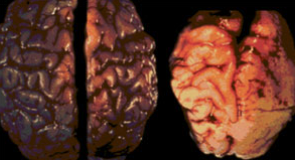
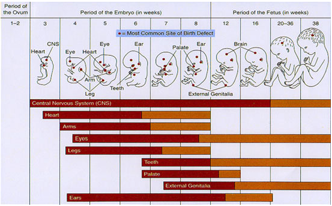

Overview
What is FASD?
Fetal Alcohol Spectrum Disorders (FASD) is an umbrella term describing a range of conditions that can occur in a person whose mother consumed alcohol during pregnancy. The effects can include physical, mental, behavioural, and learning disabilities with lifelong implications.
Alcohol is a teratogen — a substance that is toxic to a baby's developing brain. Because the brain and central nervous system are developing throughout the entire pregnancy, the baby's brain is always vulnerable to damage from alcohol exposure at any stage.
Pre-natal alcohol exposure can cause damage in various regions of the brain. The areas affected depend on which areas are developing at the time the alcohol is consumed.

Key Features
Main Characteristics of FASD
Growth Deficiency
Significantly below-average height and weight, often present from birth and persisting throughout childhood.
Small Head Circumference
Microcephaly (smaller-than-normal head size) reflects reduced brain growth resulting from prenatal alcohol exposure.
Characteristic Facial Features
Specific features associated with FASD including a smooth philtrum, thin upper lip, and small eye openings.
Behavioural Difficulties
Challenges with attention, impulse control, social skills, and adaptive behaviour stemming from neurological differences.
Neuroscience
Prenatal Alcohol Exposure & the Brain
Alcohol passes freely through the placenta and reaches the developing fetus at concentrations similar to those found in the mother's bloodstream. Unlike the adult brain, the fetal brain has no protective mechanism against this exposure.
The damage caused depends heavily on timing, quantity, and frequency of exposure. Because different brain regions develop at different stages of pregnancy, even moderate drinking at a critical period can cause irreversible structural or functional changes.
From the College of Cognitive and Linguistic Sciences at Brown University: vulnerability of the fetus leads to defects during different periods of development. The most sensitive periods result in major structural abnormalities, while less sensitive periods may cause physiological defects and minor structural abnormalities.
By Trimester
Alcohol Exposure During Stages of Pregnancy
First Trimester
Brain Cell Migration
As shown by the research of Drs. Clarren and Streissguth, alcohol interferes with the migration and organisation of brain cells during the first trimester — laying the foundation for later cognitive and structural problems.
Journal of Pediatrics, 92(1):64–67
Second Trimester
Clinical FAS Features
Heavy drinking during the second trimester — particularly from the 10th to 20th week after conception — appears to produce more pronounced clinical features of FAS than drinking at other times during pregnancy, according to a study in England.
Early Human Development, 1983 Jul, Vol. 8(2):99–111
Third Trimester
Hippocampal Impact
According to Dr. Claire D. Coles, the hippocampus is greatly affected during the third trimester, leading to problems with encoding visual and auditory information — affecting reading and mathematical ability.
Neurotoxicology and Teratology, 13:357–367, 1991
Developmental Sensitivity
Stages of Fetal Vulnerability
Each organ and system in the fetus has its own critical window of development. The chart below illustrates the relative sensitivity of major structures across the three trimesters — showing when the risk of teratogenic damage is greatest.
Development Timeline
Stages of Fetal Development
Fetal development consists of three phases: Conception, Embryonic Development, and Fetal Development. Tap any phase to expand the milestones.
Conception
Formation
Formation of a viable zygote by the union of the male sperm and the female ovum (fertilisation). Normal hormonal balance, normal cycle, and a healthy pregnancy are essential foundations.

Embryonic Development — Weeks 1.5 to 12
1.5 Weeks
Completely developed embryo at this earliest stage.
3rd Week
Central nervous system begins to develop. Heart development is initiated — beating begins.
4th Week
Complete mass — about 2.5 cm long, size of a pigeon's egg. The embryo inside is about ⅜" and weighs less than 1 gram. Out-pouchings from the anterior brain form early eyes; limb buds of arms and legs appear.
5th Week
Nose and lip formation begins. The brain develops into 5 components; the lumen of the spinal cord becomes continuous with brain vesicles allowing free cerebrospinal fluid flow.
8th Week
Major organs begin development. Now about the size of a hen's egg — 2.5 cm long, ~4 g. Hands and feet are visible. Baby is extremely reactive to its environment. Male sex hormone (testosterone) produced by testes; masculine development begins in males.
12th Week
About the size of a goose egg. Placenta is well established and weighs more than the baby (~8.8 cm, ~60 g). Fingers and toes are visible. End of the embryonic stage.
Fetal Development — Weeks 14 to 40
14–16 Weeks
Brain developed to the point where the baby can suck, swallow, and make irregular breathing movements.
16 Weeks
15.2 cm, 180 g. Complete closure of nasal septum and palate. Fetal heartbeat heard with amplification. Fetal movement recognised. Sex is now distinguishable.
20 Weeks
20.3 cm, 300 g. Fetal heartbeat: 120–160 beats per minute.
24 Weeks
30.4 cm, 720 g. Baby is maturing but not yet considered viable outside the uterus.
28 Weeks
35.6 cm, 1,100 g. Baby can survive outside the uterus if lungs are capable of breathing — 10–20% chance of survival. Legally viable.
32 Weeks
35.5 cm, 1,680 g. 50% survival if born at this time. Skin is red and wrinkled. Baby is the same size as the placenta around 30–34 weeks.
36 Weeks
45.7 cm, 2,500 g. 94% survival rate. Some subcutaneous fat present. Fingernails reach the tips of the fingers.
40 Weeks — Full Term
50.8 cm, 3,360 g. Full-term birth. All major systems mature and ready for life outside the womb.
Need support or information?
Visit our support section for resources on living with FASD, or get in touch with our team directly.